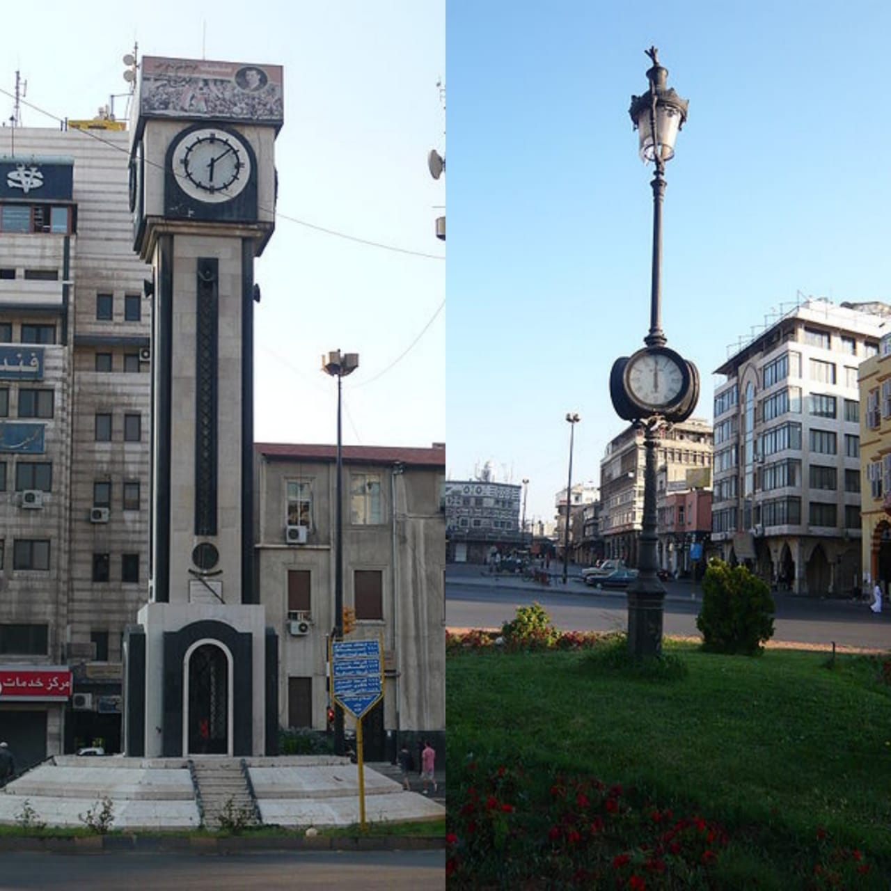

Clocks of Homs
Homs is well recognised by its two public clocks standing at each end of Quwatli Street. The older one, at the eastern end facing al-Hamidiya Street, was elevated by the French in 1923, and the other one, at the western end facing al-Dablan street, is housed in the New Clock Tower which was built in 1957.